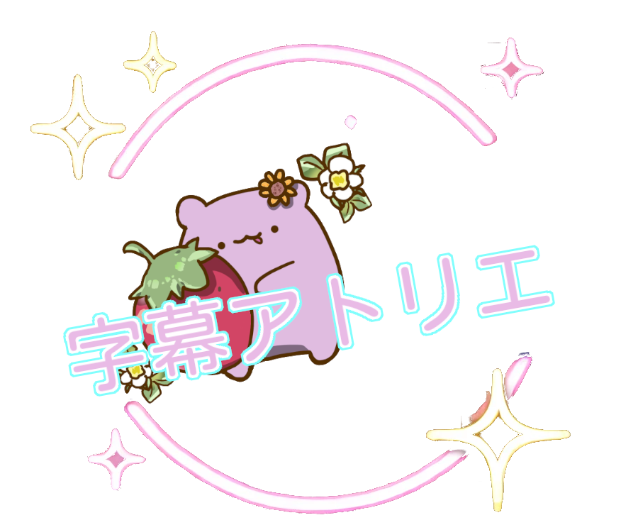

ハムハム字幕アトリエ
開発者：ジュノーン（乙夏れいファン）
モードA
自動翻訳によるもので、精度は保証できません。ご了承ください。

開始
停止
翻訳モード
Google 翻訳 (無料)
翻訳クラウド接続
Google Script Apps接続
高速翻訳 (翻訳精度低め)
ブラウザAI (実験機能)
モデルDL
モデルDL
字幕設定
その他
れいーモード
音声認識
言語を選択
日本語
中国語(台湾)
中国語(香港-粵語)
英語
スペイン語
インドネシア語
韓国語
タイ語
ベトナム語
サイズ
縁取り
翻訳 1
翻訳しない
日本語
中国語(台湾)
英語
スペイン語
インドネシア語
韓国語
タイ語
ベトナム語
サイズ
縁取り
翻訳 2
翻訳しない
日本語
中国語(台湾)
英語
スペイン語
インドネシア語
韓国語
タイ語
ベトナム語
サイズ
縁取り
翻訳 3
翻訳しない
日本語
中国語(台湾)
英語
スペイン語
インドネシア語
韓国語
タイ語
ベトナム語
サイズ
縁取り
マイク情報
🔒
PROTECTED
字幕表示
横位置 (Align)
左
中央
右
背景色 (BG)
音声字幕を1行表示
無効 (Disable)
有効 (Enable)
翻訳字幕の行数
制限なし
1行（省略表示）
1行（スクロール）
音声認識
5時間で自動停止
有効 (Enable)
無効 (Disable)
⚠️ OFF
エンジン選択
Deepgram (中精度/有料)
Soniox (高精度/有料)
ブラウザ内蔵 (無料)
オフライン認識パック
ダウンロード
OBS連携
Enable OBS WS
Disable
Enable
OBS WS URL
OBS Password
全体(Full)ドラッグ＆ドロップ
音声(Src)
翻訳1
翻訳2
翻訳3
OBS自動構築 (Auto Setup)
システム
字幕パネル最大化
有効 (Enable)
無効 (Disable)
ログ表示 (Debug)
有効 (Enable)
無効 (Disable)
設定リセット
初期化
翻訳
翻訳
クリア
声音認識反応ないの場合は、一度止めて數秒待ってから、もう一回録音ボタンを押し直すことをお勧めします。
v2.17.1